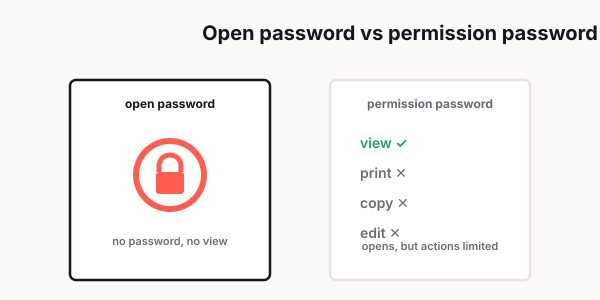

How to Password-Protect a PDF Without Locking Yourself Out
Let's be honest: protecting a PDF sounds like one of those simple, responsible things you're supposed to do. You have a contract, a financial statement, a client document, a scanned ID, or maybe a file with personal details. Adding a password feels like the obvious move. More secure, less risk, problem solved.

Except that's not how it usually goes.
What often happens is this: you lock the file, send it off, and then realize you forgot which password you used. Or the person on the other end can't open it on their phone. Or they can open it, but they can't print it, copy anything, or fill in the form fields. Sometimes you even end up blocking yourself out of your own file weeks later because you were trying to be careful in the moment and a little too clever with the password.
That's the weird thing about PDF security. It's easy to make a file more restricted. It's much harder to make it secure and still usable.
A protected PDF that nobody can open is not really helping anyone. It's not practical security. It's just friction wearing a security badge.
The good news is that password-protecting a PDF does not have to be a mess. You do not need to overcomplicate it, and you definitely do not need to treat every file like it contains top-secret government material. In most everyday situations, what you really need is a simple, repeatable system that protects sensitive information without turning file sharing into a support ticket.
This guide walks through when PDF passwords actually make sense, the difference between the two main types of PDF protection, how to build safer password habits, and how to avoid the most common mistakes that cause access problems later.
Supporting 400+ people a day across different countries for two decades, I watched the same password mistakes happen on repeat — usually someone protecting a file and then being unable to open it themselves, or sending the password in the very same email as the document.
— Hill, 20 years in IT supportWhen password-protecting a PDF actually makes sense
Not every PDF needs protection.
That's probably the first thing people get wrong. They assume security always means locking everything down. In reality, adding a password only makes sense when the file contains information that could create a problem if the wrong person sees it.
A password-protected PDF is useful when you're sharing things like:
- Signed agreements.
- Tax documents.
- Internal financial reports.
- HR or payroll records.
- Medical paperwork.
- Identity documents.
- Client files with confidential details.
- Any file that includes addresses, account numbers, personal contact info, or sensitive business data.
In those cases, a password adds a basic layer of control. It helps reduce casual exposure, especially if the file is being sent by email or stored somewhere other people might access.
But here's the part many people skip: password protection is not automatically the best tool for every situation.
If you're sharing a general brochure, a product guide, a presentation, or a document that is meant to be widely accessible, locking it may just create unnecessary friction. The more barriers you add, the more likely people are to give up, ask for help, or request an unprotected version anyway.
A good rule of thumb is simple: if the file would be a problem in the wrong hands, protect it. If it's mostly informational and meant for easy access, don't add security just to feel secure.
Open password vs permission password
This is where things get confusing for regular users.
When people say they want to "lock" a PDF, they often mean one of two very different things.
The first is an open password. This is the password someone must enter before they can even view the file. Think of it as a front door key. No password, no access.
The second is a permission password. This type does not always stop someone from opening the file, but it can restrict what they are allowed to do after opening it. For example, it may block printing, editing, copying text, or modifying the document.
That sounds useful, and sometimes it is. But this is exactly where a lot of user frustration begins.
If you send someone a PDF protected with an open password, they may not know what app to use, where to enter the password, or why the file looks broken when previewed in a browser or email client.
If you send someone a PDF with permission restrictions, they may open it just fine but suddenly discover they cannot print it, sign it, select text, or complete a task they assumed would be easy.
That is why you should always ask one simple question before protecting a file: what exactly am I trying to prevent?
If your goal is "only the intended person should view this file," use an open password.
If your goal is "the person can view this, but I don't want casual editing or printing," then permission settings may help.
If your goal is "I want this to be secure but not annoying," keep restrictions as light as possible. Too many limitations turn a normal PDF into a frustrating experience, especially for less technical users.
Good password habits for shared documents
Most PDF password problems are not technical problems. They are habit problems.
People either choose passwords that are too weak, too random, too inconsistent, or too easy to forget. Then later they act surprised when the whole thing falls apart.
Here's the smarter way to handle it.
First, do not use obvious passwords like 123456, password, the company name, or the recipient's name. Those are weak and defeat the point.
Second, do not create a wildly complex password with no system behind it unless you are saving it properly. A password that looks "secure" but disappears from your memory in ten days is not a good password. It is just future pain.
Third, use a password manager if you deal with protected files often. This is probably the cleanest long-term solution. It lets you store document passwords safely and avoids the classic "I know I wrote it down somewhere" problem.
Fourth, separate the file and the password when sharing. If you email the PDF, do not put the password in the same email right below it. Send the password through a different channel, such as a text message, secure chat, or a separate communication thread.
Fifth, keep your naming conventions clear. If you have multiple versions of a PDF, label them in a way that makes sense. A messy desktop full of files like final.pdf, final2.pdf, and final_FINAL.pdf is how people accidentally send the wrong version.
And finally, think in terms of workflow, not just one-time action. A good password habit is not "I locked the file." A good habit is "I locked the right file, used a recoverable password, shared it the right way, and kept a record."
That is what keeps security useful instead of stressful.
How to protect a PDF without making it painful to use
This is really the sweet spot: enough protection to be responsible, but not so much that your file becomes a hassle.
Start by deciding who the recipient is. That matters more than most people think.
If you are sending the PDF to a client, customer, manager, coworker, or someone who may open it on a phone, tablet, work laptop, or web browser, you should assume they are not using the same setup as you. What opens smoothly on your machine may behave differently on theirs.
That means you should keep things simple.
Use a standard open password when privacy matters. Avoid stacking too many restrictions unless there is a specific reason. If the person needs to print, sign, review, or extract information from the file, do not block those functions by default unless you know that limitation is necessary.
Before sending the file, test it yourself. Close the original. Open the protected version on another app or another device if possible. Make sure the password works. Confirm that the document still displays correctly. Check whether links, forms, signatures, or layout elements still behave as expected.
This step sounds small, but it saves a ridiculous amount of back-and-forth later.
Also, be realistic about the level of protection a password actually provides. A PDF password is useful for access control and casual privacy, but it is not a magical shield against every possible misuse. You are adding a layer, not creating perfect digital immunity.
That is why usability matters so much. In real life, the best security step is often the one people can consistently use without messing it up.
What to do before distributing a locked PDF
A lot of PDF mistakes happen in the last two minutes before sending.
You export the file, add a password, attach it, and hit send because you're in a rush. That is exactly when version errors, access issues, and avoidable confusion sneak in.
Before you distribute a protected PDF, run through a quick checklist:
- Make sure you are locking the correct version.
- Double-check that the file opens normally with the intended password.
- Confirm whether the recipient needs to print, sign, fill, or copy from the file.
- Remove anything that should not be in the document, including hidden notes, draft pages, or old revisions.
- Use a file name that clearly identifies the document and version.
- Decide how you will share the password separately.
- Keep a secure record of the password for your own future access.
That last point matters more than people realize.
Sometimes the recipient opens the file the same day and everything is fine. But months later, you need that same PDF again for legal, accounting, compliance, or project reference reasons. If you cannot reopen your own archived file, you have created a slow-motion headache for your future self.
Think about distribution as part of document lifecycle, not just delivery. You are not only sending a file. You are creating a version that may need to be accessed again later.
Common mistakes that cause access problems later
The biggest PDF password mistakes are surprisingly ordinary.
One common problem is using a password you think you will remember because it feels personal or obvious in the moment. Two months later, it makes no sense.
Another is sending the password in the same email as the attachment. That weakens the protection and makes the whole exercise feel performative rather than useful.
A third mistake is over-restricting the file. Blocking printing, copying, annotating, or form entry may sound smart until the recipient actually needs one of those features to do their job.
People also forget to test the protected file after applying security. This leads to the classic message: "It says the file is locked," or "It opens, but I can't do anything with it."
Then there is version confusion. This one happens all the time. You protect one draft, send another draft, revise the original, then forget which one has the correct settings. Now nobody is sure which file to trust.
And finally, there is the archiving problem. A protected PDF with no stored password is basically a time bomb. You may not feel the damage today, but eventually it will come back and waste your time.
The easiest way to avoid all of this is to keep your system boring. Seriously. Boring systems win.
Use consistent naming. Use secure but recoverable passwords. Store them properly. Test before sending. Share the password separately. Only apply restrictions that serve a clear purpose.
That may not sound exciting, but it works.
A practical mindset that makes PDF security easier
Here's the mindset shift that helps most: stop thinking about password protection as a "security feature," and start thinking about it as part of communication.
The goal is not just to lock a file.
The goal is to let the right person access the right document, at the right time, with the right level of protection, without turning the process into confusion.
That means good PDF security is not about making everything harder. It is about reducing unnecessary risk while keeping the document usable.
In everyday work, the best approach is usually simple:
- Protect sensitive files.
- Leave ordinary files alone.
- Use open passwords when privacy matters.
- Use permission restrictions only when they solve a real problem.
- Keep your own recovery process organized.
- Test before you send.
That alone will put you ahead of most people, because most PDF access issues are not caused by advanced threats. They are caused by rushed decisions, poor password habits, and not thinking about the recipient's experience.
And honestly, that is the real lesson here. A secure file that causes avoidable confusion is not a well-managed file. Smart protection should feel almost invisible. It should do its job quietly, without becoming the main event.
When you password-protect a PDF the right way, people get the document they need, sensitive data stays better protected, and you do not end up emailing "Sorry, try this version instead" three times in a row.
That is a much better system than locking everything down and hoping for the best.
Related reading: Sending the protected file afterward? See the easiest way to send large PDF files; and if it also needs your signature, read how to sign a PDF without printing.
Frequently asked
When should I password-protect a PDF?
You should password-protect a PDF when it contains sensitive information such as contracts, financial records, personal details, HR documents, or confidential client files. If the document is meant for public or easy access, adding a password may create unnecessary friction.
What is the difference between an open password and a permission password in a PDF?
An open password prevents anyone from viewing the PDF unless they enter the correct password first. A permission password allows people to open the file but restricts actions such as printing, editing, or copying content.
Can I still lock myself out of my own PDF?
Yes. Many people lock themselves out by using a password they forget, failing to store it securely, or protecting the wrong file version. Using a password manager and a clear file naming system helps prevent this.
Is it safe to send the PDF password in the same email?
It is better not to send the PDF password in the same email as the attachment. A safer practice is to send the password through a separate channel such as text message, chat, or a different email thread.
What should I check before sending a password-protected PDF?
Before sending a protected PDF, verify that it opens correctly, confirm the password works, check whether the recipient needs to print or sign the file, and make sure you are sending the final version.
Do all PDFs need password protection?
No. Only PDFs with sensitive or confidential information usually need password protection. Locking ordinary informational files can make them harder to access without providing meaningful benefit.